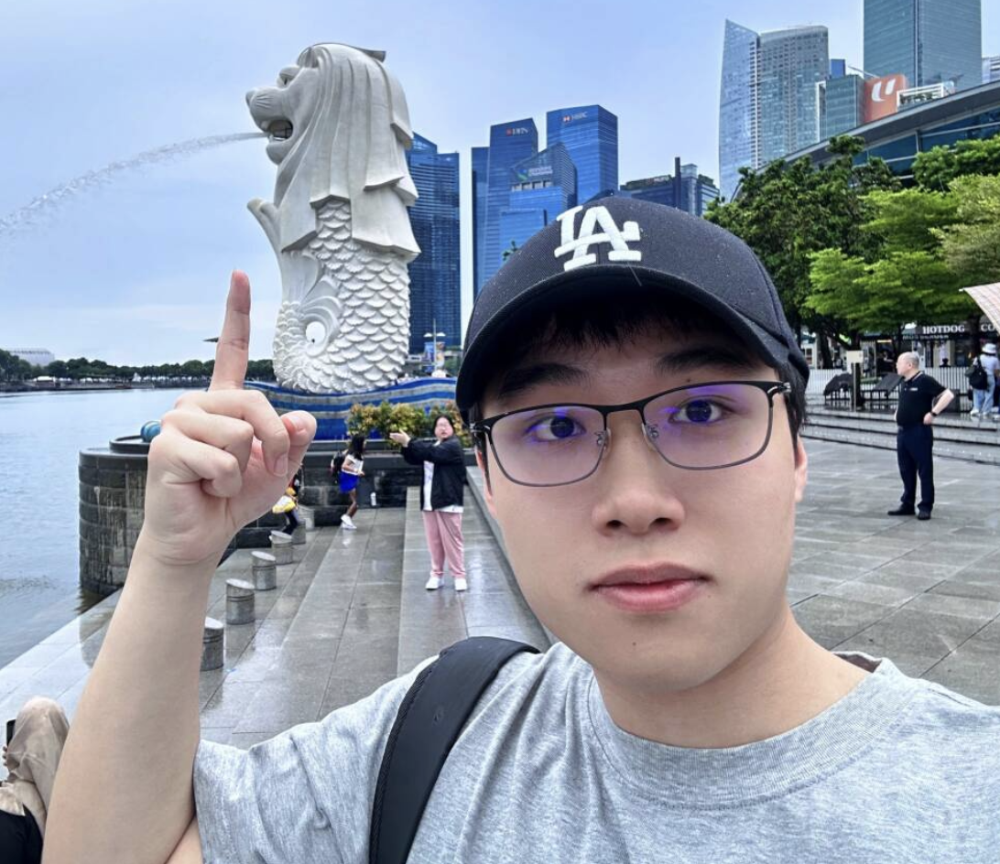

News
Jun 2025
Our survey paper is accepted by ACM Computing Surveys!
Jun 2025
Grateful to be selected as the CAAI Rising Scientist!
Sep 2024
One paper is accepted by EMNLP'24!
Mar 2024
One survey is accepted by KDD'24!
Jan 2024
One full paper and a tutorial are accepted by WWW'24!
Oct 2023
Two full paper (oral presentation) are accepted by WSDM'24!
Aug 2023
One long paper is accepted by CIKM'23!
Jun 2023
Graduated from Wuhan University with Honor!
Apr 2023
Two full papers are accepted by SIGIR'23!
Mar 2023
Awarded the HKPF and HKU-PS! Thanks all!
Jan 2023
One paper is accepted by ICLR'23!
Dec 2022
One paper is accepted by ACM TOIS!
Oct 2022
Awarded the National Scholarship for the fourth time! Thanks all!
Sep 2022
Awarded the CCF Elite Collegiate Award! Thanks all!
May 2022
Awarded the Finalist Winner in Mathematical Contest in Modeling (MCM)! Thanks all!
|  |
Ph.D. Candidate
Institute of Data Science
Email: xubinrencs AT gmail.com
|
I am currently a second-year Ph.D. candidate at the Institute of Data Science in The University of Hong Kong, under the guidance of Prof. Chao Huang and Prof. Kao, Benjamin C.M.. My research focuses on large language models, AI Agents, and information retrieval. Prior to this, I conducted research at the IIP Lab, advised by Prof. Zhenzhong Chen. I received my B.Eng. degree from Wuhan University.
Education
|
The University of Hong Kong (HKU) Ph.D. in Data Science September 2023 - Current, Hong Kong SAR Advisor: Prof. Chao Huang & Prof. Kao, Benjamin C.M. |
|
Wuhan University (WHU) Bachelor in Computer Science and Techonology September 2018 - June 2023, Wuhan Advisor: Prof. Zhenzhong Chen |
Open-Source Projects
|
[paper] [code] |
VideoRAG is a retrieval-augmented generation framework specifically designed for processing and understanding extremely long-context videos with neural-enhanced video intelligence and infinite context processing.
 
|
|
[paper] [code] |
SSLRec is a PyTorch-based open-source deep learning framework for recommender systems enhanced by self-supervised learning techniques.
 
|
Experiences
| Research Intern, Baidu Inc, Search Science Team, June 2023 - August 2023 Mentor: Dr. Lixin Su Director: Dawei Yin |
| Research Intern, Data Intelligence Lab, The University of Hong Kong, June 2022 - June 2023 Advisior: Prof. Chao Huang |
| Research Intern, IIP Lab, Wuhan University, June 2021 - June 2022 Advisior: Prof. Zhenzhong Chen |
Tutorials, Surveys, and Workshops
|
|
A Survey of Large Language Models for Graphs
X. Ren, J. Tang, D. Yin, N. Chawla, C. Huang KDD 2024 |
|
|
A Comprehensive Survey on Self-Supervised Learning for Recommendation
X. Ren, W. Wei, L. Xia, C. Huang ACM Computing Surveys 2025 |
|
|
Large Language Models for Graphs: Progresses and Directions
C. Huang, X. Ren, J. Tang, D. Yin, N. Chawla WWW 2024 |
Publications [Google Scholar]
*Corresponding author|
|
Representation Learning with Large Language Models for Recommendation
X. Ren, W. Wei, L. Xia, L. Su, S. Cheng, J. Wang, D. Yin and C. Huang* WWW 2024 (full paper) |
|
|
SSLRec: A Self-Supervised Learning Framework for Recommendation
X. Ren, L. Xia, Y. Yang, W. Wei, T. Wang, X. Cai and C. Huang* WSDM 2024 (full paper, oral) |
|
|
Disentangled Contrastive Collaborative Filtering
X. Ren, L. Xia, J. Zhao, D. Yin and C. Huang* SIGIR 2023 (full paper) |
|
|
XRec: Large Language Models for Explainable Recommendation
Q. Ma, X. Ren and C. Huang* EMNLP 2024 (findings) |
|
|
LLMRec: Large Language Models with Graph Augmentation for Recommendation
W. Wei, X. Ren, J. Tang, Q. Wang, L. Su, S. Chen, J. Wang, D. Yin and C. Huang* WSDM 2024 (full paper, oral) |
|
|
How Expressive are Graph Neural Networks in Recommendation?
X. Cai, L. Xia, X. Ren and C. Huang* CIKM 2023 (long paper) |
|
|
Graph Transformer for Recommendation
C. Li, L. Xia, X. Ren, Y. Ye, Y. Xu and C. Huang* SIGIR 2023 (full paper) |
|
|
LightGCL: Simple Yet Effective Graph Contrastive Learning for Recommendation
X. Cai, C. Huang*, L. Xia and X. Ren ICLR 2023 (spotlight) |
|
|
Multi-Auxiliary Augmented Collaborative Variational Auto-encoder for Tag Recommendation
J. Yi, X. Ren and Z. Chen* ACM TOIS 2023 |
Honors & Awards
|
CAAI (Chinese Association for Artificial Intelligence) Rising Scientist 2025
- Only 5 Recipients Globalwide |
| Hong Kong PhD Fellowship 2023 |
| HKU Presidential PhD Scholarship 2023 |
|
National Scholarship
- Four times (2019, 2020, 2021, 2022) - Top 0.2% Nationwide, China |
|
CCF (China Computer Federation) Elite Collegiate Award 2022
- Only 102 Students Nationwide |
|
Finalist Winner in Mathematical Contest in Modeling (MCM) 2022
- Top 2% Globalwide |
| Pexpertmaker to Merit Student of Wuhan University 2022 |
Services
|
Journal Reviewer: Information Fusion, ACM TOIS, ACM TKDD, ACM TKDE, ACM TIST, IEEE TNNLS
Program Committee Members: NeurIPS, ICLR, ICML, KDD, WWW, WSDM, CIKM, RecSys, ACL ARR |

Last update: Jun, 2025. Webpage template borrows from Prof. Xiangnan He.